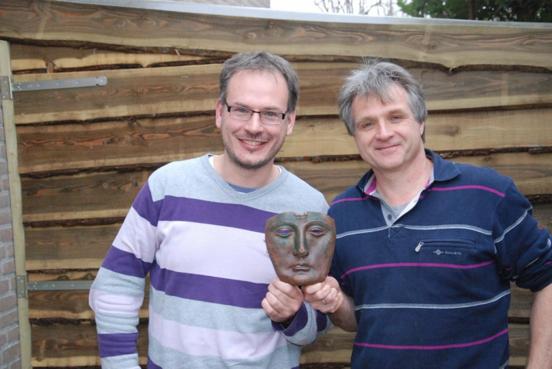
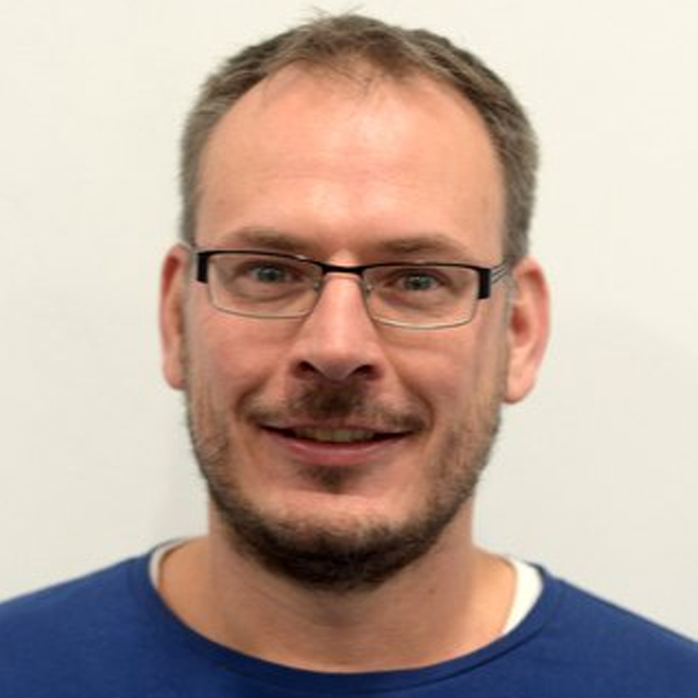

Zoekapp is ontstaan uit een passie voor geschiedenis en techniek, en de wens om vondsten net zo serieus te behandelen als de zoektocht ernaar.
Elke vondst vertelt een verhaal. Wij geloven dat die verhalen het waard zijn om vastgelegd, gedeeld en bewaard te worden, niet ergens in een schoenendoos maar op een manier die klopt: met locatie, foto's en context.
Zoekapp helpt zoekers om hun hobby professioneler aan te pakken: vondsten vastleggen op de kaart, percelen en grondeigenaren bijhouden, en vondsten rechtstreeks melden bij de officiële instanties die ze nodig hebben voor onderzoek.
Door direct te koppelen met PAN dragen we bij aan het behoud van cultureel erfgoed, zonder dat melden een aparte klus wordt naast het zoeken zelf.


Oprichter & ontwikkelaar
Oprichter & content
Ons team combineert jarenlange praktijkervaring in metaaldetectie met software-ontwikkeling.
We bouwen samen met de zoekgemeenschap en sluiten aan op de officiële meldpunten zoals PAN.
We delen dezelfde nieuwsgierigheid naar wat er onder de grond ligt als onze gebruikers.